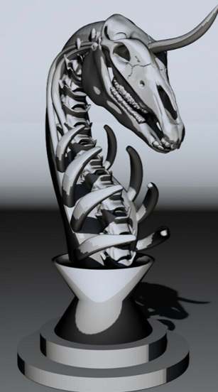
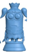

🧠 Max's Boss Battle 🐉
Choose Your Starting Level
Level 1
Grade 2
Level 2
Grade 2-3
Level 3
Grade 3
Level 4
Grade 3-4
Level 5
Grade 4
Level 6
Grade 4-5
Level 7
Grade 5
Level 8
Challenge
⏸️ Pause
🔊 Music On
Level
1
- Grade
2
❤️ HP:
100
⭐ Level:
1
👾 Left:
10
🔥 Streak:
0
Round: 0/10
 
?
Get ready...
Select your starting level above!
Submit Answer
Start Game
Start Next Round!
🏆 Game Over
Play Again